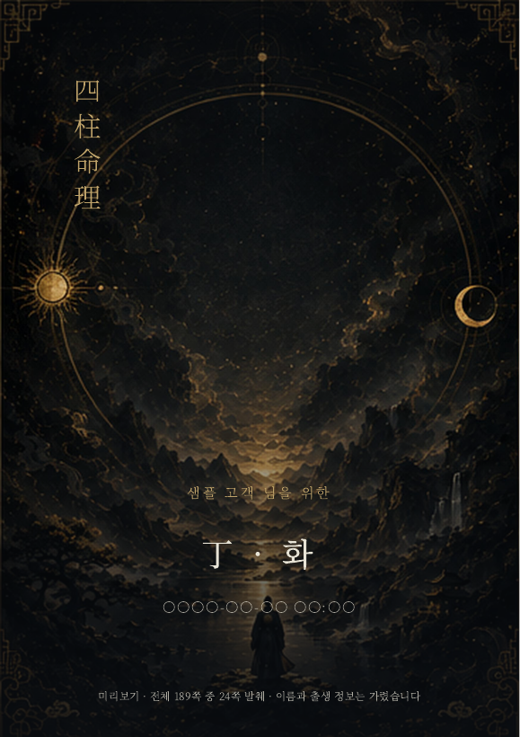
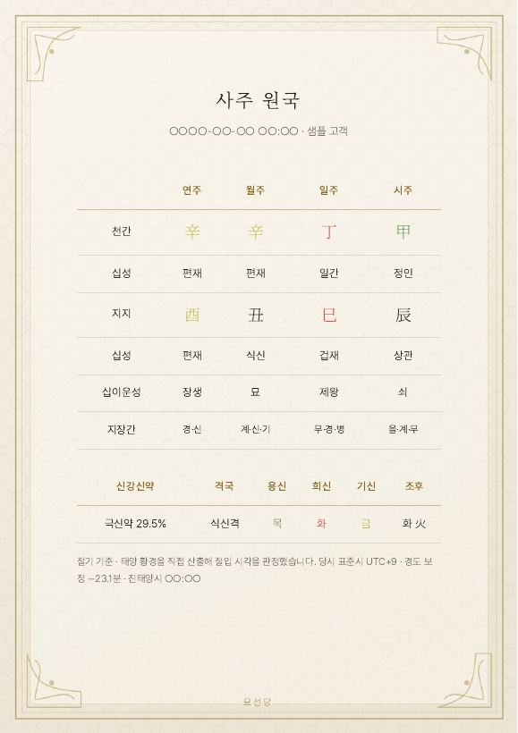
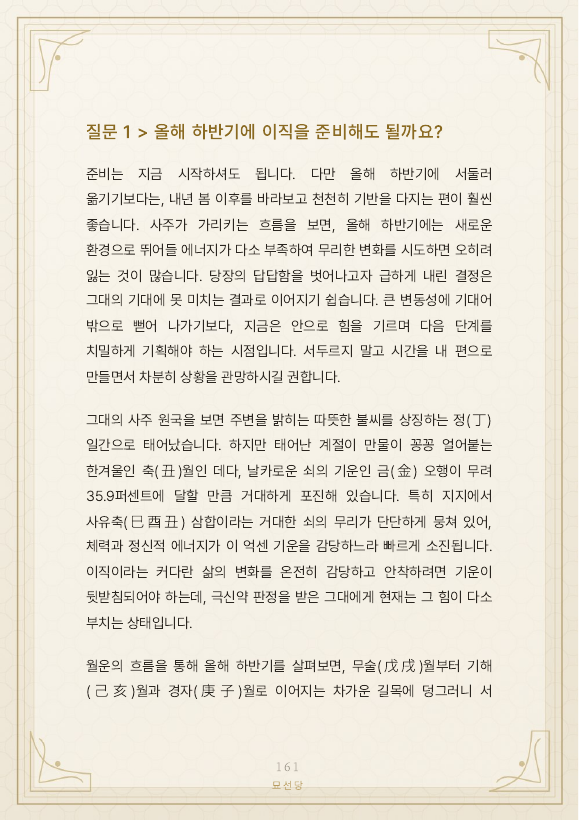

BASIC
9,900원질문 1개 심층 답변
약 50쪽 PDF
무료로 내 일간부터 확인
생년월일만 넣으면 그대의 타고난 결을 바로 짚어 드려요. 10초.
아래 그림 중 내 고민에 가까운 걸 누르면 타로 카드 석 장을 직접 뽑아요.
카드가 말한 방향을 보고, 이어서 생년월일을 넣으면 내 사주로 그 고민을 풀어 드려요. 전부 무료예요.
① 고민 고르기 → ② 카드 석 장 → ③ 내 사주 풀이
← 옆으로 넘기면 고민 5가지 →
타로는 건너뛰고 싶다면, 궁금한 걸 직접 적고 바로 사주 풀이로 갈 수 있어요.
카드를 눌러 한 장씩 뒤집으세요
카드에는 이름과 생년월일이 들어가지 않아요.
리포트는 이 질문을 따로 떼어 이렇게 풉니다.
받게 될 리포트는 이렇게 생겼어요 (예시 리포트)



질문이 여러 개라면 PREMIUM에서 최대 3개까지 함께 볼 수 있어요.
방금 적은 질문과 생년월일은 그대로 들어가요. 이메일과 입금자명만 더 적으면 돼요.
입금 확인 후 24시간 안에 이메일로 보내 드려요.
아래 중 편한 방법으로 을 보내 주세요. 입금을 확인하면 24시간 안에 로 PDF를 보내 드려요.
카카오페이로 보내기메일이 안 보이면 스팸함도 확인해 주세요. 입금자 이름이 다르면 카카오톡 채널 "묘선당"으로 알려 주세요.
묘선당 사주 리포트
생년월일뿐 아니라 직업·연애·최근 변화 같은 지금 사정까지 반영해 당주가 풀어요. BASIC 9,900원, 결제 후 24시간 안에 이메일 PDF.
기본 사주풀이 + 내 질문을 따로 분석
질문 1개 심층 답변
약 50쪽 PDF
질문 3개 + 12개월 흐름
약 120쪽 PDF
출생시간을 모르면 ‘모름’으로 주문할 수 있어요.
질문과 출생정보는 이 사이트에서만 받아요. 공개 댓글에는 적지 말아 주세요.
내 질문부터 적기